Cesky: |
PiLibSDK
Raspberry Pi bare-metal SDK library
Pre-alpha version 0.40, in progress - under development
Last Update: 06/18/2026
(c) 2026 Miroslav Nemecek
https://github.com/Panda381/PiLibSDK
Download library along with sample applications and all resources (360 MB)

Notes: Schematics and printed circuit boards are in KiCAD 9 format.
PiLibSDK is a bare-metal library for Raspberry Pi modules. "Bare-metal" means that programs run directly on the hardware without an operating system, they are not controlled by the operating system, and they have full access to the hardware. Raspberry Pi modules can thus be used in a similar way to microchips. Another advantage is that the device is fully operational within 3 seconds of powering on. Currently, the Raspberry Zero 1, Zero 2 W, Pi 2, and Pi 3 modules are supported. Support for the Pi 4 and Pi 5 modules is very limited, and they will likely not be supported in the future either, as their benefits for bare-metal use are minimal.
Sample programs have been prepared for the BarePi modular microchip kit (links: www, GitHub). Of course, you don’t have to follow the hardware wiring exactly, but this is the most common pin-to-signal mapping. The main device is the ZeroTiny game console, which corresponds to the configuration of the "Zero," "Base," and "KeyPad" modules.
An LCD SPI display with a resolution of 320x240 pixels and ST7789 controller can also be connected to the device. The wiring corresponds to the "LCD320x240" module from the BarePi kit. The software library is designed so that when it detects the connection of the LCD320x240 module, it activates the SPI output to the display and sends the image to this LCD display as well. Detection is performed using a 10K resistor connected between the DC and CS pins. If you want to be able to disable the LCD display output on the target device, you can do so using a switch that connects this 10K resistor. Detection occurs when the application or loader starts - so after changing the switch, you must terminate or start the program or loader. Disabling the output to the LCD display ensures faster program execution, as sending data to the LCD display heavily loads the program.
Although the LCD SPI display has a resolution of only 320x240 pixels, it is possible to use programs with a resolution of 640x480 pixels. The driver automatically scales the image down to the target size. If you need to display details on the LCD display that would be lost due to the scaling, you can do so by pressing Alt+[A] - the "Insert" function is used here to mean "Zoom". When you press the keys, the LCD display will sequentially show each of the four quadrants of the image in full resolution; pressing the keys a fifth time restores the full scaled-down image.
If you do not need the HDMI output while using the LCD display, disconnect the monitor cable. This will result in a significant reduction in current consumption (from approximately 400 mA to 200 mA), which is especially important when running the console on battery power. The system detects whether an HDMI monitor is connected when the program starts - therefore, after disconnecting or connecting an HDMI monitor, you must exit or restart the program or loader. With the Raspberry Zero 1 module, it may be necessary to disconnect and reconnect the power supply to detect the HDMI monitor.
A boot loader is available for BarePi devices, which allows easy launching of programs from an SD card. The programs are ready for BarePi and ZeroTiny, with Zero 1, Zero 2 32-bit, or Zero 2 64-bit modules. The Zero 1 and Zero 2 modules differ primarily in speed - the Zero 2 is noticeably faster than the Zero 1. The higher speed is due not only to a higher processor frequency but also to a newer architecture. In addition, the Zero 2 module has 4 cores, while the Zero 1 has only one core. Therefore, it is strongly recommended to use the Zero 2 module. Use the Zero 1 module only if you own it and have no better use for it. The Zero 2 module can be operated in 32-bit or 64-bit mode. The compilations are prepared for both modes. From a user’s point of view, there is no noticeable difference between the modes. It is recommended to prefer 64-bit mode, which may be slightly faster in some cases.
The BarePi kit can be controlled using either the "KeyPad" gaming keyboard or the "MiniKey" alphanumeric keyboard. The keys on the "KeyPad" keyboard are also mapped to the keys on the "MiniKey" keyboard. To distinguish between key labels, action keys from the gaming keyboard are listed in square brackets, while character keys are listed without brackets. For example, "[A]" denotes the "A" action key on the gaming keyboard. The meanings of the keys on the gaming keyboard and their mapping to the alphanumeric keyboard are as follows.
[A] = Space ... Main action button
[B] = Enter ... Secondary action button
[X] = Tab ... Auxiliary button, e.g. Help
[Y] = Esc ... Exit the menu, close the program
Alt+Left = Home ... Jump to start
Alt+Right = End ... Jump to end
Alt+Up = PgUp ... Page up
Alt+Down = PgDn ... Page down
Alt+A = Insert ... Insert mode (on LCD display, the "Zoom" function)
Alt+B = Edit ... Edit mode
Alt+X = PrtScr ... Take a screenshot and save it to an SD card
Alt+Y = Menu ... Call system menu
Note: A boot loader is not required to run programs. You can run programs directly on the Zero1/Zero2 module itself, without additional hardware or a boot loader. Copy the system files from the Root directory of the corresponding !ZeroTiny* folder to the SD card. You will need the files "bootcode.bin", "config.txt", "fixup.dat", and "start.elf". Copy the program to the Root folder as well, and rename it to KERNEL.IMG. The program will start automatically when power is turned on.
All of my source code and data are completely free to use for any purpose. The exception is certain files derived from third-party sources - these are subject to the original author’s license. This includes most fonts, as well as portions of source files taken from the Circle library and Linux code - these sections are marked in the source files.
Most fonts in this library are not my creation. They were downloaded from the internet from unknown sources, with unknown license terms of use. If you want to use only strict licenses, do not use fonts from this library.
To compile 32-bit mode, you will need AArch32 GCC (tool name "arm-none-eabi"). Install to C:\ARM_GCC32.
To compile 64-bit mode, you will need AArch64 GCC (tool name "aarch64-none-elf"). Install to C:\ARM_GCC64.
from https://developer.arm.com/downloads/-/arm-gnu-toolchain-downloads
If you will use another paths, edit paths in _c1.bat (set GCC_PI_PATH).
!BarePi ... content of SD card for kit BarePi and ZeroTiny - common files
!BarePi_1 ... content of SD card for kit BarePi and ZeroTiny - executables for module Zero 1
!BarePi_3 ... content of SD card for kit BarePi and ZeroTiny - executables for module Zero 2 32-bit
!BarePi_4 ... content of SD card for kit BarePi and ZeroTiny - executables for module Zero 2 64-bit
_devices ... devices: BarePi = modular microchip kit and ZeroTiny device
_drv ... drivers
_font ... fonts
_lib ... libraries
_sdk ... SDK (peripheral controllers)
_tools ... compilation tools
Apps ... source codes of sample applications
To prepare the SD card, format it to FAT32, copy the contents of the !BarePi folder to it, as well as one of the !BarePi_* folder (depending on the module type).
ZeroTiny is the simplest game console based on the Raspberry Pi Zero 1 or Zero 2 modules. This corresponds to the assembly of the "Zero," "Base," and "KeyPad" modules from the BarePi kit. It is recommended to preferably use the Zero 2 module in 64-bit mode. The Zero 1 module may be noticeably slower in some applications. ZeroTiny features 9 buttons, a stereo PWM audio output, and an HDMI display output. A boot loader is available, allowing for easy program launch from an SD card.
The ZeroTiny is designed in a sandwich-style construction. In my prototype, I connected the Zero module to the motherboard via an 8mm header - primarily to facilitate easy module replacement. If you solder the Zero module to the board using only a pin header, the design will be lower. However, this may make repairs more difficult, such as replacing a button.
Detailed materials for ZeroTiny hardware can be found in the "_devices/BarePi/ZeroTiny" folder.
Source code and sample programs can be found in the "Apps" folder.
You can find the compiled sample programs in the "!BarePi*" folders, organized by module type and processor mode.


The ZeroTiny console built from the BarePi modules:
System
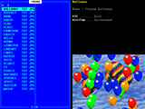 KERNEL - Loader of applications |
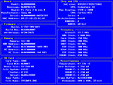 SYSINFO - System information |
Book
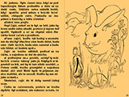 ABC - Fairy Tales from the Alphabet (Czech) |
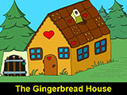 GINGER - Gingerbread House (English) |
GINGERCZ - Gingerbread House (Czech) |
Demo
BALLOONS - Flying balloons |
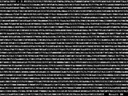 BIGFACT - Factorial of 123456789! |
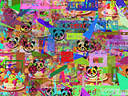 DRAW - Drawing graphic elements |
EARTH - Rotating globe |
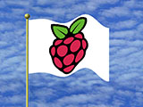 FLAG - Fluttering flag |
FLAG2 - Fluttering custom flag |
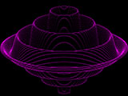 FOUNTAIN - Draw 3D graph |
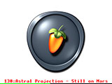 FRUITY - 130 music loops with MP3 compression |
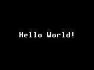 HELLO - Simplest example |
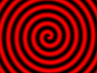 HYPNO - hypnotic rotating pattern |
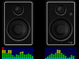 LEVMETER - simulation of music spectrum indicator |
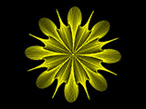 LINEART - draw line flower |
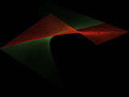 LINES - relaxation line pattern generator |
MATRIX - matrix code rain |
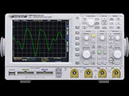 OSCIL - simulation of oscilloscope signal |
PF2027 - Christmas animation |
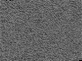 PI - calculating number Pi to 4780 digits |
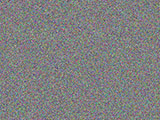 PIXELS - random generation of colored pixels |
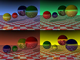 RAYTRACE - 3D pattern generation by ray tracing method |
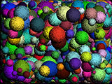 SPHERES - random spheres |
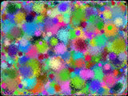 SPOTS - random spots |
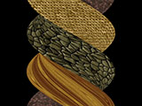 TWISTER - twisting textured block |
WATER - simulation of rippling water surface |
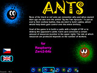 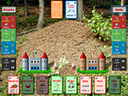 ANTS - card game |
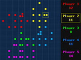 ATOMS - Game of exploding atoms |
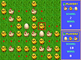 EGGS - Logic game as Reversi |
| 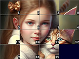 FIFTEEN - Logic puzzle game |
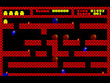 FLAPPY - Logic game from Sharp MZ800 |
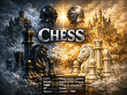 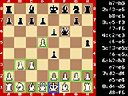 CHESS - Chess game |
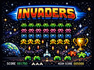 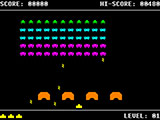 INVADERS - Shooting game Space Invaders |
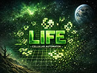 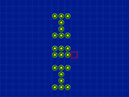 LIFE - Cell life simulator |
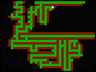 MAZE - Find way out of maze |
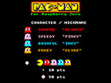 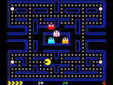 PACMAN - Action game Pac-Man |
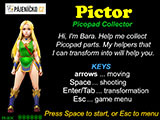 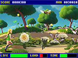 PICTOR - Picopad Collector |
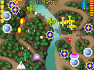 RAPTOR - Shooting game |
I recommend using MP3 files with a constant bitrate. Some older MP3 formats, or MP3s with a variable bitrate, may not allow you to move the playback pointer, or the track may end prematurely before the end. The player only supports short file names - that is, the name of an MP3 file can be up to 8 characters long. If a folder also contains a JPG image with the same name as the MP3, with dimensions of 320x240 pixels, it will be displayed instead of the info page. You can switch between the image and the info using the [X] key. The [B] key plays the current directory starting from the first track. The [A] key starts playback from the current track.
The player comes with a sample set of songs, in the style of various artists, created in Suno AI. In total, there are 248 tracks, containing 13 hours of music. Samples can be downloaded here.
Download samples part 1 (200 MB): styles of ABBA, The Beatles, Breton Celtic, Classical
Download samples part 2 (224 MB): styles of Computer, Cyberpunk, Enya, Folk
Download samples part 3 (213 MB): styles of Children, Jean-Michel Jarre, J-pop
Download samples part 4 (217 MB): styles of Loreena McKennitt, Medieval, Meditation, Metal, Vox Angeli
Download samples part 5 (207 MB): styles of Mixed, Nightwish with Tarja Turunen, Mike Oldfield
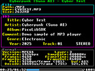 MP3 - MP3 player |
Test
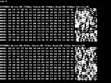 EEPROM - View contents of I2C EEPROMs |
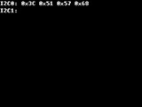 I2CSCAN - Scan I2C0 and I2C1 bus |
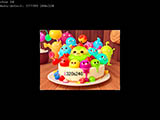 LCD - Test LCD SPI display |
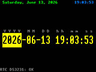 RTC - Display and set current time, using RTC module |
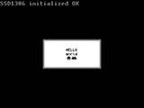 SSD1306 - Test SSD1306 display |
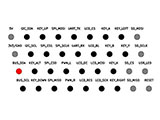 TESTLED - Test BarePi bus with TESTLED module |
Miroslav Nemecek


{kind=link}
{kind=link}
{kind=link}
{kind=link}
{kind=link}
{kind=link}
{kind=link}
{kind=link}
{kind=link}
{kind=link}
{kind=link}
{kind=link}
{kind=link}
{kind=link}
{kind=link}
{kind=link}
{kind=link}
{kind=link}
{kind=link}
{kind=link}
{kind=link}
{kind=link}
{kind=link}
{kind=link}
{kind=link}
{kind=link}
{kind=link}
{kind=link}
{kind=link}
{kind=link}
{kind=link}
{kind=link}
{kind=link}
{kind=link}
{kind=link}
{kind=link}
{kind=link}
{kind=link}
{kind=link}
{kind=link}
{kind=link}
{kind=link}
{kind=link}
{kind=link}
{kind=link}
{kind=link}
{kind=link}
{kind=link}
{kind=link}
{kind=link}
{kind=link}
{kind=link}
{kind=link}
{kind=link}
{kind=link}
{kind=link}
{kind=link}
{kind=link}
{kind=link}
{kind=link}
{kind=link}
{kind=link}
{kind=link}
{kind=link}